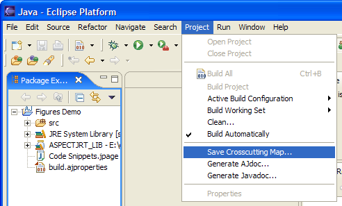
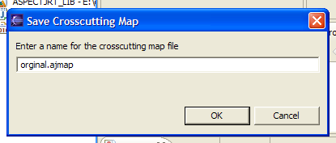
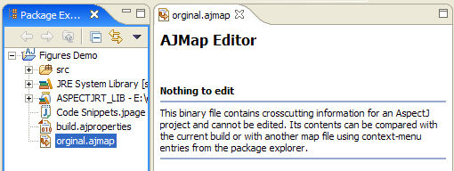
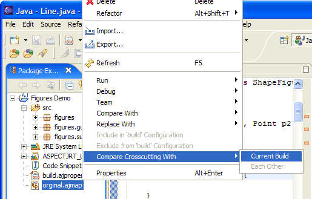
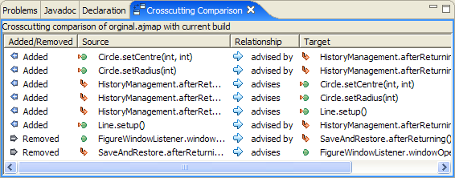

This page introduces the new Crosscutting Comparison view and related functionality. This is available in AJDT development builds with versions of 1.2.1.20050627142749 onwards, which can be obtained from the downloads page for either Eclipse 3.0 — 3.3. Crosscutting comparison is not available for Eclipse 3.4 or later (AJDT 1.6 or greater).
The goal of this new functionality is to answer the "What's changed?" question in relation to the aspect-oriented structure of your application. Say you make a release of your project and then you do some refactoring such as renaming some methods, adding new methods, optimizing pointcuts etc. The advice in your project may now be matching in different places (or in additional, or fewer places) but in anything other than very small projects it would be hard to spot this purely from the editor markers, Cross References view, and Visualiser view offered by AJDT. These views show you the current state of the crosscutting but not how it has changed.
An AspectJ project in Eclipse has a crosscutting structure associated with it, which contains information such as the methods which are affected by a particular piece of advice. This information is used in AJDT to populate the Cross References view and to create the advice markers shown in the editor. In order to be able to determine how this crosscutting structure has changed some time later, we first need to save out the information into a file. This can be done via the Saving Crosscutting Map... option on the Project menu, as shown below.
You will then be prompted for a name for the file to store the crosscutting structure in. These files are given the ".ajmap" extension.
After entering a name the map file will be created in the project. You can then check these map files into CVS if required, so that a project can have one or more crosscutting structures associated with it. As shown below you can open the map file in an editor, but as it is binary data you can't edit it (and you probably wouldn't want to anyway). Future versions of the map file editor could at least show information about the structure contained.
If you create two map files you can compare them with each other by selecting them both in the package explorer and selecting the Compare Crosscutting With > Each Other menu option. It is also possible to compare the crosscutting structure from one map file with the current structure of the project, as shown below.

After selecting the required menu option, the new
Crosscutting Comparison view is opened and populated.
In the example shown below something has changed since the map
file was created which resulted in the Line.setup
method being advised by advice in the HistoryManagement
aspect. Either the setup method was added, or
the pointcut associated with the advice was changed such that it
now matches this method. As you can see both entries in the
view refer to the same relationship, but from opposite directions.
Future versions of the view will offer a relationship filter, so you
could for example just see the "advises" relationships, and not the
"advised by" ones.
You can double click cells with the mouse, or use the Enter and arrows keys to navigate to an item listed in the Crosscutting Comparison view. You can also click the column headers to sort the table according to the contents of that column.
Note also that if you are comparing a map file with the current build, the comparison is redone whenever a build occurs. This gives you an ongoing view of what has changed since the map file was created, e.g. rename a method, save the file, an incremental build happens, and the Crosscutting Comparison view updates to show that some advice is no longer affecting a method that it is was previously advising.
Finally the screenshot below shows another example where a number of crosscutting relationships have been added, and some have been removed. Please let us know what you think of this new functionality and if you have any suggestions for improving it (either via the bug, the AJDT newsgroup, or the ajdt-dev mailing list).
